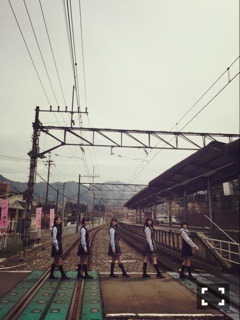

| 2016/05 10 Tue | ひめたん-0o0-その635 |

◯BOMB
北野・寺田と3人で載ってます！
3姉妹の探偵という設定で
それぞれの細かい性格も一応あるので
想像してみると面白いかな( ˆωˆ )
そしてインタビューが
ま～あ深い話をしていらっしゃる。笑
是非チェックしてみて下さい！
◯月刊Newtype
表紙にチラッといるよ私たち！
うひゃー！
ここさけの聖地巡礼をしてきました！
この日の撮影、めっちゃ楽しかったな～
アニメが好きだというのもあり
このメンツがまた好きだというのもあり
一日中ケラケラ笑ってた気がします( ˆωˆ )

そうだ、せっかくだから
ここで久々に
アニメの話しようかなo(^o^)o
今期は
文豪ストレイドッグス
ジョーカー・ゲーム
坂本ですが？
田中くんはいつもけだるげ
テラフォーマーズ2期
暗殺教室2期
を観てます！皆さんはいかがー？
8日の乃木坂46の「の」
皆さん聴いていただけましたか？
久々の乃木のの楽しかった(´｡•ω•｡`)
私リアルタイムで聞いてました
乃木團楽曲が気になって気になって。
「失恋したら、顔を洗え！」
いや、素敵な曲だね！
愛未ちゃんとのハモりはしっくりくるなと
レコーディングの時に改めて感じました
フルはいつ解禁されるんでしょうか。
発売前にタイミングあるのかねぇ～
Dメロなんかも是非聴いてほしい！！
そして昨日おに魂で解禁になりました
「欲望のリインカーネーション」
こちらは一期生アンダー曲です
かっこ良い感じの曲です！
AメロBメロは
2人、3人ずつで歌っているのですが
聞き分けられるかな( ˇωˇ )？
いつかどこかで披露できるといいな～
あ、ちなみにこれもリアタイで聞いてたよ！
ゆったんお疲れ様～！
日曜の夜は、らじらー！サンデー
今週末は声優アーツに小倉唯さん、
乃木坂から若月佑美ちゃんが登場！
募集中のメールテーマは
◯若への応援メッセージ
◯乃木坂目覚ましボイス
◯若様ひめ様劇場対決！
おたよりの宛先はこちら
2ndアルバムより
なーちゃんのソロ曲「光合成希望」
初解禁もしますよ！お楽しみに！

～お知らせ～
6/10 マーキー
ゆったんと2人で載ります
わちゃわちゃしてるゆったん
めっちゃ可愛いです♡
インタビューでは
アンダーライブのこと、2ndアルバムのこと
お話させていただきました！
(＊´・ω・＊)
コメント(656)
2016/05/10 23:24